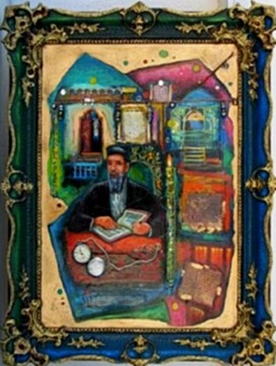
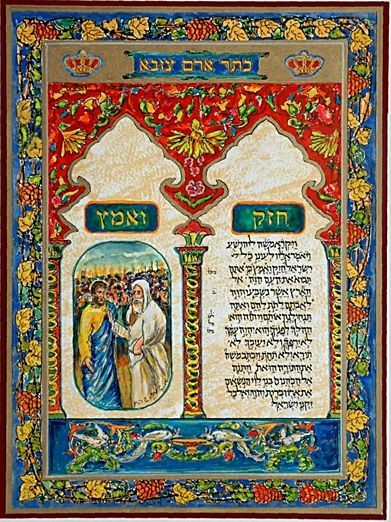

רזומה
מארם צובא לבת־ים
סיפורו של אמן שנולד ליד הכתר, ומצייר אותו כבר שישה עשורים.

אברהם שמי־שהם נולד בארם צובא־חלב ועלה ארצה בשנת 1960. השתלם במחיצת האמנים יהודית הר־אבן, אדווין סולומון, שלמה ויתקין ואהרון אלקלעי, ולמד גרפיקה במכונים הישראלים לטכנולוגיה ובמכון לאמנות בת ים.
חבר אגודת הציירים והפסלים בישראל ומשמש כיו״ר אגודת הציירים והפסלים בבת־ים, חבר הנהלת מוזיאון התנ״ך ואוצר בוועדת האמנות. עורך גרפי ומאייר.
עובד לפי סדרות, ומהן: שיר השירים, חתונה תימנית, מוסיקה, נופי הארץ ויודאיקה. מצייר כתובות נישואין אמנותיות מפוארות לפי ההלכה ועם המלצות.
כתר ארם צובא
שכן של תנ״ך בן אלף שנה
בילדותו בחלב גר האמן סמוך לבית הכנסת הגדול והעתיק, שבו נשמר ב״מערת אליהו״ כתר ארם צובא — התנ״ך הקדוש והמיסטי — משך מאות בשנים, עד שהובא לישראל ומוצג כיום בהיכל הספר במוזיאון ישראל בירושלים.
ציור ואיור קטעים מהכתר היא משאת חייו של האמן וסגירת מעגל מילדותו.

הוקרה
פרסים
- פרס ארד עבור ציור — הגדת חלב, שהוצגה ביריד הספרים הבינלאומי בירושלים.
- פרס שני עבור כרזת אל־סם.
- אות יקיר ההסתדרות — בת־ים 2002, כאמן בת־ימי.
תערוכות
ארבעה עשורים על הקיר
תערוכות יחיד
- אולם מורשת יהדות ארם צובא
- ״כתר ארם צובא״ — היודאיקה, תיאטרון חולון
- בית האמנים, חולון
- ״זכרונות מארם צובא״, בית אסיה, תל אביב
- תערוכת יודאיקה, מוזיאון התנ״ך, תל אביב
- מוזיאון התנ״ך, תל אביב
- גלריה תיאטרון מופת, רמת גן
- מרכז אמנויות, ראשון לציון
- טריפטיכון הכתר, הספרייה המרכזית, בת־ים
- ״הגלריה״, כפר המכביה
- בית יד לבנים, ראשון לציון
- תיאטרון הסימטה, יפו העתיקה
- משכן האמנות שטיינברג, חולון
- בית פיליפ מוריי, אילת
- מוזיאון ריבק, בת־ים
- מוזיאון ע״ש דוד בן ארי, בת־ים
- מלון מרינה, בת־ים
- מוזיאון רמת גן
- גלריה איפנמה, גורדון, תל אביב
- גלריה ״שחף״, יפו העתיקה
- מוזיאון בת־ים
- גלריה חדשה, ריינס
- גלריה ישראלי׳ס
- בית ציוני אמריקה
תערוכות קבוצתיות
- תערוכת ONE HEART, המרכז היהודי, ניו יורק
- תערוכת קבוצת ״צבע בטבע״
- תערוכה קבוצתית, מוזיאון בית התנ״ך, תל אביב
- הספרייה העירונית, רמת גן
- אמני בת־ים, מוזיאון בת־ים לאמנות
- בית ריבק, קבוצת ״צבע בטבע״
- תערוכת המזוודה הבינלאומית לזכרו של דושאן
- יריד האמנות הבינלאומי, מינכן
- תערוכה כללית, בית האמנים אלחריזי, תל אביב
כמו כן השתתף בעשרות תערוכות קבוצתיות נוספות.
יצירת קשר
קשר ישיר עם האמן
לפרטים על עבודות, הזמנת כתובה או תיאום תערוכה.
- טלפון
- 03-6581351
- אזור
- בת־ים, ישראל
- תחומים
- ציור · יודאיקה · כתובות